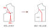

常見胸褶的地方，其下多半還有一根褶子（圖中標示 a 的那根）——那是腰褶。把上方的胸褶與下方的腰褶連為一體，便是公主線。馬甲、洋裝上那條熟悉的縱線，正是這樣連出來的。
前身的立體，主要便由這兩根褶子塑造；成衣正面的基本形狀，大抵也出自它們之手。

一旁還有另一根褶子（圖中的 b），收的是腹側——肚腹正面與側腰之間、斜前方的那一段腰身。
那麼，為何不乾脆用一根褶子把腰全部收完？因為褶子是極細膩的東西，份量必須分散。所有褶份集中於同一根，那根褶子便會過大、過於顯眼，版型的線條就毀了。把腰身分散到幾根褶子上——這便是這根褶子的任務。
接著可以看到，前片與後片之間有一個相連的小三角形（圖上紅色的那一塊，標示 c）——那是側邊的量，前後片在側腰「共同持有」的一根褶子，指的就是側腰可以收進去的份量。這一塊無須另外車褶——裁版時直接裁去，前後片沿脇邊線車合，它便自然收掉了。
可以留意：這根褶子並不大。緣由在於——若粗暴地只從這一根去改，整件衣服的版型會失去平衡。漂亮的版型，向來是許多地方各修一點、細細累積而成，所以 c 從不貪多。
初學時常有一種直覺：知道有胸褶、也知道有側邊，便習慣把腰圍直接從側邊收進去——「看著側邊，把它收進來，這就是我要的腰圍了。」事實並非如此。版型要好看，份量必須分散到每一根褶子上，收得才勻稱；否則成品便會「咦，這一塊怎麼特別小？」「這裡看起來怎麼怪怪的？」——處處透著說不出的彆扭。
說個題外話：我們對服裝的印象，其實是前人建構出來的。眼前的服裝之所以好看，來自以往品味的累積——那是一代代版師對版型的見解、對材質應用的成果。你看過的衣服長那個樣子，所以你認定衣服「應該」長那樣。當份量全數從側邊收掉、成品看起來不對勁的時候，原因無他——你的做法，偏離了前人累積出來的那條路。
接著看後片，先從肩膀談起。肩上有一根肩褶——許多人學習服裝時，最感陌生的就是這一根。首先要知道：肩褶收起之後，前片與後片的肩膀寬度才會相等。
這根褶子從何而來？以手撫過肩頭、一路往後背滑下——人體在這裡，是帶著弧度的。這意味著：一塊布披在背後、越過肩膀往前倒的時候，布與身體之間存在一段空間差。肩褶的用意，便是把這段空間差收起來。正如前身的胸挺起時有空間差，後身的肩也有相對應的一段——肩褶因此而存在。
談過肩褶，再看後片的腰褶。背部的裁片上其實有兩根，圖中分別標示為 e 與 d。
e 那根褶子，可以往上連到肩褶，一路化成一整條線——這件事，留待「轉褶」一節再談。
d 同為腰褶，卻會一路延伸到接近腋下的地方。它的任務，是把背收得服貼漂亮。見過那種很漂亮的馬甲嗎？背部、腰線都非常美——那正是這根褶子的功勞。
人的背部是一道內凹的曲線，需要許多根褶子，細細地、慢慢地把它收攏——這便是背褶最初的使命。
最後是 f，位於後中心。它同樣不大——圖上可見，中間僅是一段極小的距離。它的用途是：當後中不是對稱裁雙的時候（例如馬甲），它也能收去一點點的腰褶。
下一節 第四節：回到派對帽：轉褶 →